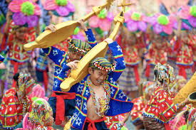
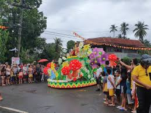

The Davao Region is home to some of the most colorful and culturally significant festivals in the Philippines. These events showcase the rich traditions of indigenous groups, agricultural abundance, and religious heritage, making them a must-experience for both locals and tourists.
From the grand Kadayawan Festival in Davao City to unique town fiestas and tribal gatherings, each celebration highlights the region’s deep-rooted history and dynamic culture.
This guide covers the major festivals across Davao’s provinces, their cultural significance, and the best times to visit.
The Kadayawan Festival is an annual thanksgiving celebration held every third week of August in Davao City, Philippines, honoring its 11 ethnolinguistic tribes, bountiful harvest, and rich culture. The 2025 celebration runs from August 8 to 17, featuring vibrant, cultural events like the Indak-Indak sa Kadalanan (street dancing) and Pamulak sa Kadayawan (floral float parade).

The culmination of these influences results in a vibrant cultural landscape where traditions coexist with contemporary practices. Davao's unique character is further enhanced by its ongoing efforts to promote cultural heritage while adapting to modern trends.

Davao del Sur, including Digos City and surrounding municipalities, hosts vibrant festivals celebrating harvest, faith, and local culture. Key events include the Padigosan Festival in Digos City, the Dorongan Festival in Bansalan, and various barangay fiestas featuring street dancing and agricultural showcases. These festivals often occur annually to celebrate local history and thanksgiving.

Music and dance traditions in Davao del Sur are deeply rooted in the cultural heritage of its indigenous peoples, specifically the Bagobo Tagabawa, Bagobo-Kiata, and other ethnolinguistic groups

Davao del Sur's craft and costume traditions are deeply rooted in the indigenous Bagobo culture, known for intricate tinalak weaving, abaca fiber weaving, brass casting, and detailed beadwork. Key traditions include sangi knife crafting, beaded jewelry (red, yellow, black), and vibrant ceremonial attire featuring geometric patterns, honoring ancestral spirits and natural beauty.